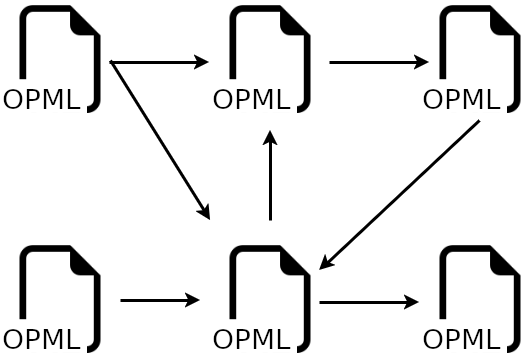
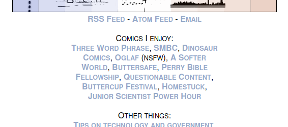
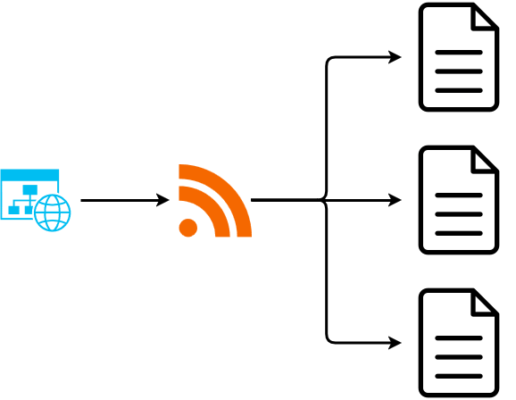
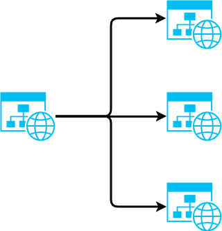

RSS and other web feeds are a great way to keep track of articles published by your favorite blogs. But feed discovery remains challenging. Some recent work in this space opens up new opportunities.

Since the earliest blogs were published, blogrolls helped readers discover new blogs.
Each blogger could promote the blogs they follow by listing them somewhere on their site (their blogroll).
Readers could discover these suggestions as they browsed, helping them explore the blogosphere.
A blogroll could be as simple as a list of hyperlinks, although recent tooling has become more advanced.

Here's XKCD's blogroll, promoting other webcomics.
With the rise of PageRank-based search engines (I.E. Google), content discovery suddenly became easy. This sucked the wind out of the sails of manually curated blogrolls and directories: readers no longer needed them. Twenty years later, the major search engines are losing the battle to filter out link farms and AI-generated slop. Overwhelming SEO pressure has mutated websites so now you can't get a recipe for brownies without a long back story. They've turned towards value extraction, filling search results with so many ads that they sometimes push actual results below the fold. (Although honestly, you're using an ad-blocker, right?) It's a troubling development that makes us yearn for the early web.
Top search results are often just the same large websites: Wikipedia, IMDB, StackOverflow, etc. It's a sea of sameness that makes the Internet feel boring and beige. Personal blogs, small community websites, and other digital gardens still exist, and it's easier than ever to create your own, but Google won't find them for you. Instead we're seeing modern search engines like Marginalia emerge to elevate the small-web.
Social networks followed a similar path. They proved that analyzing connected users (followers, friends, etc.) helped provide quality recommendations for content and new connections. They connected a billion people online in a way that was previously not possible, providing real value to the users. Unfortunately, the centralized social networks were also profit driven and they tuned their graph analytics and recommendation engines towards engagement over all else. From fueling rage, teen mental health crisis, offensive advertising, malvertising, poor moderation, log-in gated walled gardens, censorship, privacy-invasive practices, and the numerous degradations of Twitter: enshitification is in fully swing.
Many, myself included, have fled to the fediverse. Popular software includes Mastodon, Pixelfed, and Lemmy. The fediverse is still small, with tens of millions of comments per month across millions of active users; tiny compared to the big centralized social networks which boast one to three billion active users. But it's the quality of communications, community, and user-focused software that sets it apart. Moderation in the fediverse is much better staffed, and it shows.
Could a modern look at RSS feeds and blogrolls help the small-web much like the fediverse is revitalizing community in social networks?
RSS readers work great when you've found a site that publishes content you want to consume. You paste a URL in your feed reader and most tools will automatically detect available feeds. Your reader will periodically scan your feeds for new content and track what you've already read. It's a personalized news feed from sources you curate. Importantly, an RSS reader is your user-agent and you can configure filters, processing, or other automation to suit your needs (instead of the needs of advertisers and shareholders).
But RSS historically hasn't helped discover new feeds. You'd need to leave your RSS feed, navigate to the website to view any blogrolls, or use other platforms to discover new sites. Some RSS readers support recommendations, but these are mostly centralized recommendations, not the sort of emergent recommendations you'll get from a social network.
At its core a social network is a collection of links between users. The terminology varies, but these links could be friends, followers, subscribers, professional connections, etc. If we wanted to make RSS social, we'd need a way to define links between the feeds.
An RSS feed is mostly just a list of posts. You link to it from your website using a <link rel="alternate" ... > element:

A blogroll traditionally is a list of hyperlinks to suggested websites:

Discovering these blogroll links programmatically is challenging. Search engine crawlers can do it by exhaustively crawling the web, but the purpose of each hyperlink is unclear. There's no specification for how to find a blogroll page or determine which hyperlinks are part of the blogroll. What's missing is a specification for machine-readable blogrolls and a way to link to them from a homepage or RSS feed.
This idea is being explored by a couple different people at the moment.
Dave Winer has created
a namespaced RSS element
<source:blogroll>
which points to list of RSS feed subscriptions in the OPML format.
He also proposed the
<link rel="blogroll" ...>
HTML element to make OPML blogrolls discoverable from webpages.
This specification makes blogrolls machine-discoverable and machine-readable.
Micro.blog
has
adopted the HTML element
for their hosted blogging service.
OPML (Outline Processor Markup Language) is commonly used by RSS readers to import and export feed subscriptions. It's a well-supported standard for sharing feed subscriptions and a natural choice to improve blogroll connectivity.
RSS feeds have always been part of the blogroll network, but these changes make it feasible to discover and walk the network.
It's worth noting, these are only forward links that describe which feeds a site follows or recommends. Backward links, describing who subscribes to a feed, are not specified and would need to be discovered by walking the connection network.
As a starting place I manually identified twenty websites with OPML blogrolls. From these I can follow links to find 150 distinct websites. Several of the links go to YouTube pages, reminding us that RSS isn't just for blogs. The network is small but could quickly exceed the scale of large manually-curated RSS feed lists (like Awesome RSS Feeds which has around 500 feeds). It's only been two months since the specification was proposed, so rapid growth is possible.
To track the network growth over time, I've created a git scraping crawler that I'll run until it become impractical. You can view the latest network graph, which will be updated periodically. If you'd like to join the network, but your blog isn't discoverable from the network yet, check out the repo for instructions on manually adding your website. Opt-out instructions are also in the repo.
Deploying an OPML blogroll is as easy as uploading the file to your hosting provider and linking to it.
Check if your existing hosting or site generator supports discoverable blogrolls. Early adopters like micro.blog are ready to go. Others may take longer, so be sure to let them know you are interested.
Ideally, you'll want to auto-generate an HTML view of your OPML blogroll for web browsers. The blog you're reading now is a collection of raw HTML files hosted on GitHub Pages, so I wrote something custom. My subscription list is on FeedLand (another Dave Winer creation) so I link there instead of hosting my own. I wrote an RSS crawler that collects recent posts from my subscription list and recommendations from discoverable blogrolls they contain. You can view my feeds and their recommendations.
If you'd like to use my approach, check out these repos:
These are either open source or public domain, so fork away.
Hopefully I've piqued your interest in RSS feeds and blogrolls. The value of a network grows with the number of nodes, so I'm hopeful others will join us.
It's still unclear how RSS readers will adopt the blogroll network.
Discovery by walking the network or using graph analysis for generating recommendations seem possible.
Software could make it easy to publish feeds or support back-ends like FeedLand for subscription management.
My network mapping tools may be the first, but there are many possible improvements.
I'm excited to see what others can build.
Hello! I'm Robert Alexander, a freelance software developer and security consultant. This blog features some of my work and thoughts on software, the cloud, and security. You can get updates on my posts with your favorite RSS client or on Substack. I'm also on Mastodon.